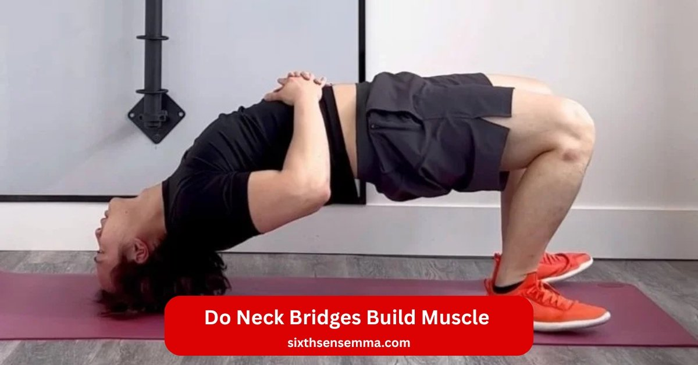
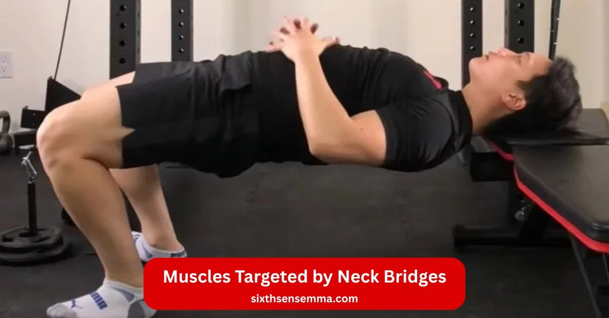
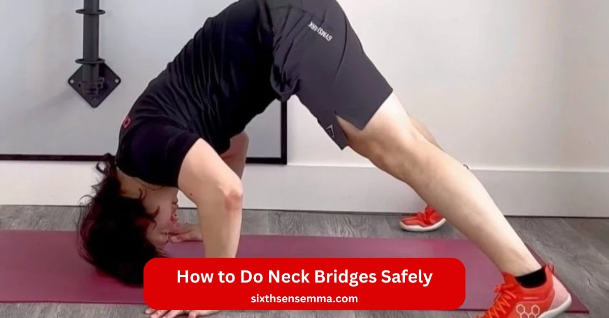

Do Neck Bridges Build Muscle A Complete Guide to Benefits & Safe Alternatives

Do Neck Bridges Build Muscle this is one of the most common questions asked by athletes, fitness enthusiasts, and especially combat sports practitioners. Neck bridges are a powerful bodyweight exercise that load the cervical spine and challenge the neck muscles through isometric strength. Legendary fighters like Mike Tyson became famous for using neck bridge exercises to build a stronger, more resilient neck. But while neck bridges can be extremely effective, they can also be risky if performed incorrectly.
What Are Neck Bridges?
Neck bridge uses bodyweight to build strength in cervical area. Wrestler like mike tyson made neck bridge exercises famous. Do neck bridges build muscle through isometric strength and progression. Grapplers in mma and combat sports use them to prevent injury. Neck training adds strength and resilience. But safety concerns matter. Neck bridges aren’t for all. Train your neck safely with correct form.
Exercise basic concept
Neck bridge lifts head off ground in bridge position. It loads cervical spine with body weight. Muscles involved work in flexion or extension. Isometric neck hold builds isometric exercises. Neck workouts fight disc degeneration.
How neck bridges are performed
Lie on back. Plant feet. Lift hips. Place head on mat. Rock gently. Hold static holds. Progressively increase time. Use proper posture. Keep range of motion small. Avoid axial load on spine. Drill slow. Front bridge faces up. Rock forward. Side to side adds lateral flexion.
Common variations (front, back, wrestler bridge)
Front bridge rocks on forehead. Back bridge uses crown. Wrestler’s bridge flips to back. Add plate on your forehead for using weights. Bridge variations include neck harness work. Neck harness hangs weight around the neck. Higher rep ranges or isometrics fit grapplers. Deep neck flexors engage. Rhomboids support.
How Neck Bridges Work
Yes, but mostly isometric strength not big size. Neck bridge loads neck muscles with bodyweight. Mike tyson used neck bridge exercises for stronger neck. Do neck bridges build muscle through static holds. Wrestler and grapplers gain neck strength. Progression adds time or using weights. Neck training fights disc problems. Build strength fast. Train your neck safely to avoid injury risk.
Neck bridges and muscle hypertrophy
Neck bridges create tension for muscle hypertrophy. Body weight in bridge position sparks growth. Higher rep ranges push neck workouts. Isometric neck limits full range of motion. Progressively increase load with plate on your forehead. Ways to build size need neck harness. Neck bridges help strengthen the neck but neck bridges aren’t best for huge gains.
Muscles that get activated
Front bridge hits deep neck flexors. Back bridge works extensors. Lateral flexion adds side to side muscles. Rhomboids stabilize. Cervical spine supports vertebra. Muscles involved cover flexion and extension. Wrestler’s bridge fires all. Grapple in mma needs them. Proper posture keeps spine safe.
Strength vs muscle size
| Point | Strength (Neck Bridges) | Muscle Size (Neck Training) |
|---|---|---|
| Primary Effect | Neck bridges boost isometric strength | Size mostly increases with weighted neck exercises |
| Training Style | Compression hold → stronger neck | Added resistance → bigger muscles |
| Muscle Adaptation | Isometric exercises harden neck muscles | Hypertrophy increases muscle volume |
| Injury Prevention | Strength training prevents herniation | Size alone doesn’t guarantee injury prevention |
| Spine Health | Decompression helps disc degeneration recovery | Overloading incorrectly can stress the spine |
| Best Tool for Growth | Bodyweight bridges | Neck harness work adds real size |
| Exercise Role | Builds stability, strength & resilience | Builds size, thickness & mass |
| Application in Sports | Perfect for combat sports (MMA, wrestling) | Useful but needs controlled progression |
| Risk Factor | Wrong technique → spinal issues | Heavy weight too early → strain risk |
| Training Balance | Best approach = smart training + technique | Combine with strength for balanced development |
| Medical Safety | Get medical clearance if neck issues | Avoid loading if pain exists |
| Frequency | Can be trained daily (light) | Size training 2–3× per week |
| Bodyweight Role | Ideal for bodyweight drills | Not enough alone for big size |

Muscles Targeted by Neck Bridges
Neck bridge hits key neck muscles for do neck bridges build muscle. Bodyweight in bridge position fires cervical groups. Wrestler like mike tyson built stronger neck this way. Do neck bridges build muscle in anterior and posterior areas. Neck training adds isometric strength. Grapplers in mma rely on them. Progression grows strength and resilience. Train your neck safely to prevent injury.
Anterior neck muscles
Front bridge targets deep neck flexors. Flexion lifts head. Static holds build isometric neck. Muscles involved fight disc degeneration. Higher rep ranges spark growth. Neck exercise with correct form keeps range of motion. Neck bridges help strengthen the neck.
Posterior neck muscles
Back bridge works extensors. Wrestler’s bridge rocks on crown. Compression loads vertebra. Isometric exercises harden neck strength. Decompression rests spine. Ways to build include plate on your forehead. Neck bridges aren’t easy on cervical spine.
Trapezius & upper back involvement
Rhomboids and traps stabilize. Lateral flexion adds side to side work. Proper posture supports spinal line. Bridge variations engage upper back. Neck harness work pulls around the neck. Strength training ties neck workouts to back. Grapple needs this link.
Shoulder & stabilizer muscles
Shoulders hold bridge position. Using weights adds load. Neck harness boosts strengthen your neck. Isometrics firm stabilizers. Train neck bridges with smart training. Medical clearance if neck issues. Neck bridges the wrong way risks getting injured. Body weight drill fits all. Combat sports demand strong neck. Axial load tests herniation risk. Progressively increase for safe and effective gains.
Benefits of Neck Bridges
Do neck bridges build muscle and give real gains? Yes. Neck bridge boosts neck strength for combat sports. Mike tyson used neck bridge exercises daily. Do neck bridges build muscle in neck muscles and more. Wrestler and grapplers see stronger neck. Neck training adds strength and resilience. Progression with bodyweight drill works. Train your neck safely for safe and effective results.
Increased neck strength
Neck bridge loads cervical spine with body weight. Isometric neck hold builds isometric strength. Static holds grow neck muscles. Higher rep ranges push strength training. Neck harness work adds using weights. Ways to build strong neck start here. Neck bridges help strengthen the neck.
Better performance for MMA, boxing & wrestling
Grapple in mma needs neck strength. Wrestler’s bridge fights takedowns. Front bridge blocks punches in boxing. Neck workouts raise isometric exercises. Bridge variations fit combat sports. Progressively increase power. Neck bridges aren’t weak. They boost range of motion.
Improved posture
Proper posture comes from deep neck balance. Rhomboids align spine. Lateral flexion fixes side to side tilt. Neck exercise corrects daily slump. Decompression eases disc. Train neck bridges for straight vertebra. Neck bridges the wrong way hurts. Correct form fixes posture.
Injury prevention & neck stability
Strong neck stops herniation. Compression trains axial load safe. Neck bridges cut injury risk. Medical clearance if neck issues. Isometrics add neck stability. Prevent injury with smart training. Spinal issues drop. Strengthen your neck to prevent injury.
Enhanced flexibility
Flexion and extension stretch cervical area. Bridge position opens range of motion. Side to side adds lateral flexion. Neck harness keeps flow. Bodyweight drill grows flexibility. Plate on your forehead tests limits. Train the neck for full flexibility. Neck bridges build flexibility and strength.

How to Do Neck Bridges Safely
Do neck bridges build muscle without harm? Yes with correct form. Neck bridge needs train your neck safely. Mike tyson did neck bridge exercises right. Do neck bridges build muscle safe for wrestler and grapplers. Neck training starts slow. Bodyweight drill first. Progression adds using weights. Medical clearance if neck issues. Smart training cuts injury risk.
Warm up routine
Start light. Roll neck muscles side to side. Lateral flexion 10 times each way. Flexion forward and back slow. Rhomboids shrug 20 reps. Deep neck tilt gentle. Spine circle arms. Range of motion full but easy. Proper posture all time. Decompression hang head 30 seconds. Isometric neck press hand against forehead 5 seconds.
Step by step back neck bridge
Lie on back. Bend knees. Feet flat. Hands by ears. Lift hips to bridge position. Place crown on mat. Rock slow. Hold static holds 10 seconds. Axial load light. Cervical spine straight. Progressively increase to 30 seconds. Neck bridges the wrong way arch too much. Keep vertebra safe. Drill 3 sets.
Step by step front neck bridge
Lie on back. Feet planted. Lift hips. Forehead on mat. Rock forward gentle. Front bridge loads deep neck flexors. Isometric strength hold 15 seconds. Side to side rock small. Muscles involved stay tight. Neck harness later. Higher rep ranges after base. Correct form no twist.
Proper breathing & alignment tips
Breathe steady. Inhale lift. Exhale hold. Spinal line straight. Compression even on disc. Neck bridges help strengthen the neck with air flow. Plate on your forehead only advanced. Neck without pain. Getting injured from rush. Train neck bridges calm. Strength and resilience grow.
Recommended reps & sets
Beginner 3 sets 10 to 20 seconds static holds. Isometric exercises rest 1 minute. Bridge variations 2 times week. Progressively increase 5 seconds weekly. Neck workouts 3 4 sets advanced. Neck harness work 8 12 reps. Body weight first month. Combat sports 4 sets. Safe and effective with rest. Prevent injury slow. Strong neck in time.
Why Choose Sixth Sense for Neck Bridges
At Sixth Sense Martial Arts, we are dedicated to helping students of all ages build confidence, discipline, and real martial arts skill. Our academy provides expert Brazilian Jiu-Jitsu instruction, structured belt progression, and a safe, supportive environment where every student can grow at their own pace. Whether you’re beginning your journey or aiming for advanced levels, our training programs are designed to improve your technique, fitness, and self-defense abilities.
Contact Us
Ready to take the next step in your martial arts progression? Whether you want to train Brazilian Jiu-Jitsu, build real self-defense skills, or begin your path from white belt to black belt, Sixth Sense Martial Arts is here to guide you every step of the way.Reach out to us today and start your training with expert instructors dedicated to your growth, discipline, and confidence.
Location: 817 S MacArthur Blvd #100, Coppell, TX 75019, United States
Phone: 469 972 7800
Email: info@sixthsensemma.com
Conclusion
At Sixth Sense Martial Arts, every student has the opportunity to grow, improve, and achieve their highest potential. Whether you’re starting as a white belt or working toward your black belt, our expert instructors, structured training system, and supportive environment ensure steady progress. Brazilian Jiu-Jitsu and martial arts training not only build physical strength but also develop confidence, discipline, and real self-defense skills.Your journey to mastery begins with a single step and we’re here to guide you through every belt level. Reach out today, join our community, and start training with purpose, passion, and the right guidance.
Follow Us on Social Media
Stay connected with Sixth Sense MMA through our social media channels. Follow us for class updates, training tips, and a closer look at our self defense community.
FAQ’s
Neck bridges are highly effective for increasing neck strength, stability, and isometric endurance. By loading the cervical spine with bodyweight, they force the neck muscles to work harder to maintain control and balance. This makes the exercise especially popular in combat sports like MMA, wrestling, and boxing. While they are powerful and beneficial, neck bridges must be done with correct form to avoid unnecessary pressure on the spine. When performed properly, they deliver excellent results.
A neck bridge engages nearly all the major muscles responsible for neck movement and support. The deep neck flexors activate in the front bridge, helping improve posture and forward flexion. The back bridge focuses on the neck extensors, which stabilize the spine during backward movement. Side-to-side variations activate the lateral flexors, improving mobility and balance. The traps and rhomboids also play a big role in stabilizing the upper back. Overall, the exercise builds a strong, balanced neck.
Doing light bridges daily can slowly improve mobility, posture, and the endurance of neck muscles. However, heavy or advanced bridges performed every day can lead to overuse and strain on the cervical spine. Beginners should start with a few controlled holds, improve technique, and only increase frequency once the body adapts. Overtraining can cause stiffness or discomfort, so daily practice should always remain light and controlled.
Mike Tyson practiced neck bridges to develop an extremely strong and durable neck, which helped him absorb punches without losing balance or control. A strong neck is essential in boxing for maintaining head position and minimizing the impact of strikes. Tyson’s use of neck bridges became famous because the exercise played a big role in building his legendary neck strength. His training method influenced fighters, wrestlers, and athletes around the world.
Bridges and squats serve completely different purposes, so one is not better than the other. Neck bridges target the muscles of the neck and upper back, while squats focus on the legs, glutes, and full lower-body strength. They complement each other rather than compete with each other. Squats build overall athletic power, while bridges build neck stability and resilience.
Weak neck muscles can show through several signs, such as frequent stiffness, fatigue, or discomfort during normal movements. Forward head posture is one of the most common indicators. Weakness may also cause tension headaches, poor posture control, or difficulty maintaining head stability during workouts. Athletes might notice trouble resisting force or keeping their head aligned during training. These signs suggest that targeted neck strengthening may be beneficial.
Beginners should start with just a few light sets, such as 2–3 rounds of 10–15-second holds. This allows the neck to adapt gradually without risking strain. As strength improves, the duration can be increased to 20–30 seconds. What matters most is slow, steady progression rather than doing many reps too soon. Proper form is far more important than quantity.
Yes, bridges are a very effective exercise for improving neck strength, core stability, and spinal mobility. They help strengthen the muscles that protect the cervical spine and are especially useful in contact and grappling sports where the neck is exposed to force. When practiced correctly and consistently, bridges provide noticeable improvements in posture, balance, and overall neck durability.
The ideal duration depends on your experience level. Beginners should hold bridges for 10–20 seconds to develop basic neck control. Over time, the duration can be extended to 30–60 seconds as strength increases. Advanced athletes may hold longer, but only if they have mastered proper form. Slow progression is the safest and most effective approach.
Train with us in Coppell
The first class is free. Shorts, a t-shirt and a water bottle. We lend the rest.
Book a free class